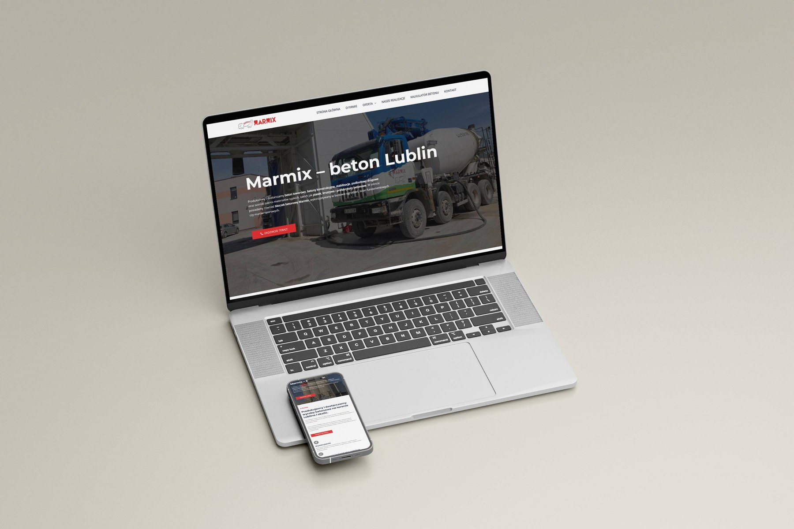

Hi, I'm Yuliia.
I don't just design websites; I build high-converting digital experiences. My "A to Z" approach ensures that every stage of development — from deep market analysis to custom implementation — is laser-focused on boosting your conversion rates.

Marmix
Website redesign for a local concrete manufacturer, featuring a centered hero layout and a streamlined B2C experience for a seamless ordering process of construction materials.
View case study →The coat
Website redesign for a Ukrainian fashion designer, featuring a new logo and a streamlined e-commerce experience for the latest collection launch.
View case study →Bieżynski
Modernizing a heritage family bakery into a digital-first brand. I developed a visual strategy and custom product catalog designed to bridge the gap between online browsing and physical store visits.
View case study →KalinaMed
Website for a doctor's personal brand: complete restructuring of site architecture and intuitive UX design to enhance patient engagement.
View case study →Want to see everything I've been working on?
See all projects on Figma →About
A UX/UI designer who turns research into results.
I design digital products end to end — from understanding a business and its customers, through wireframes and high-fidelity UI, to a clean handoff for development. I care most about the moment strategy becomes something people actually want to use.
My work spans e-commerce, personal brands, and local businesses, where clear structure and a confident visual voice make the difference between a website that looks nice and one that converts.
👋 Get in touch at
julidovha05@gmail.com